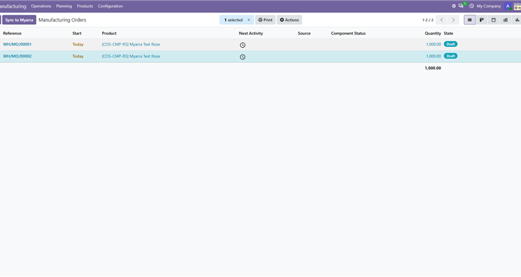
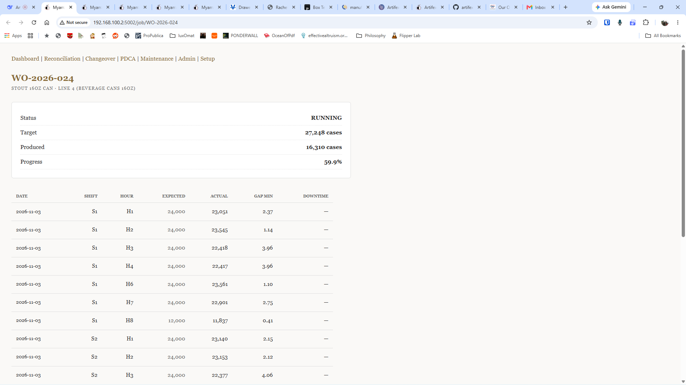
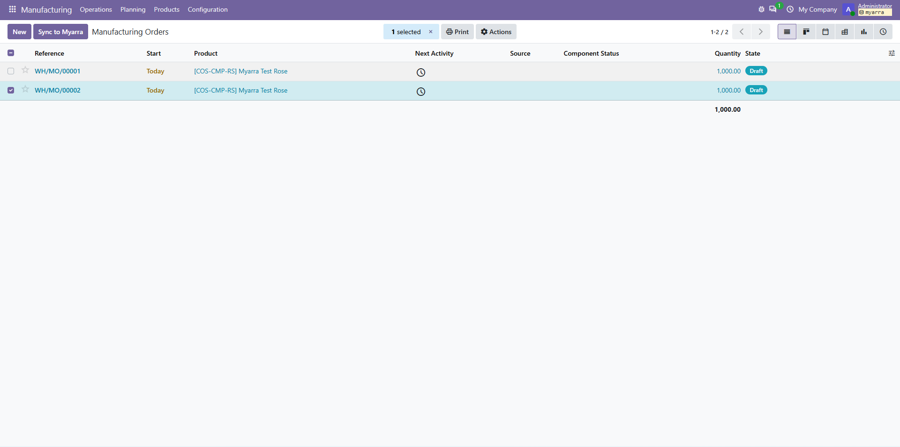

See It In Action
The Sync Button
One click in your Manufacturing Orders list pushes the active schedule straight to the factory floor.

Shop-Floor Reconciliation
Myarra maps incoming Odoo jobs against actual operator logs, highlighting unaccounted minutes.

Shift Reports
Automated reports provide two-measure OEE and operator performance directly to the floor supervisor.

Voice & Telegram Logging
Operators log production in seconds using the Telegram interface, no tablets required.

